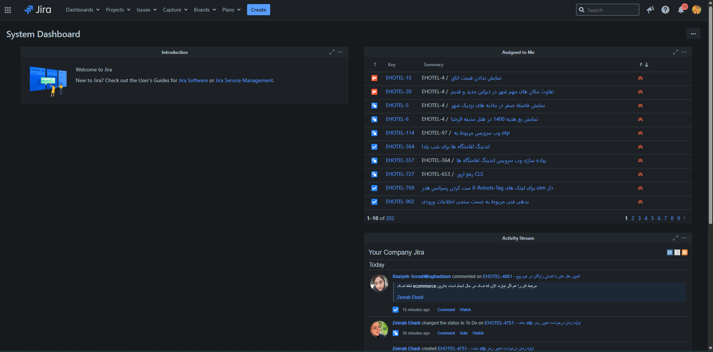
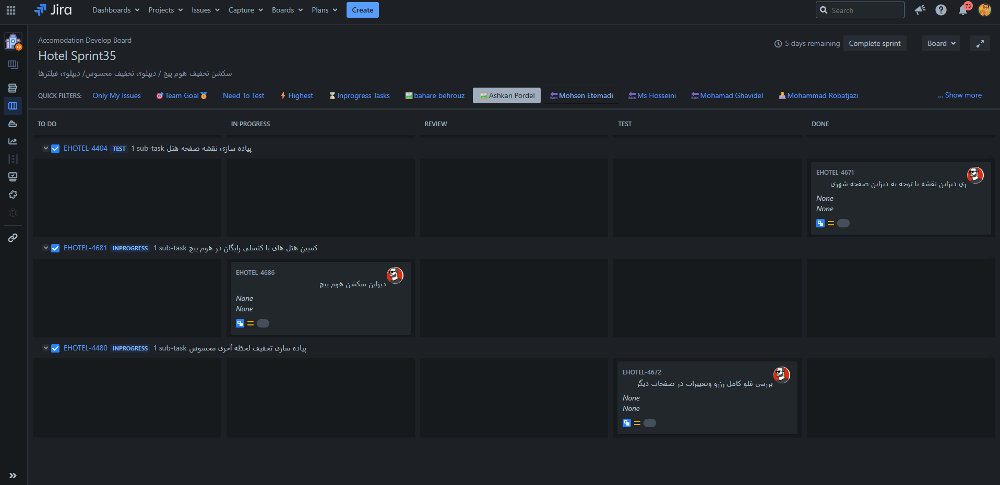
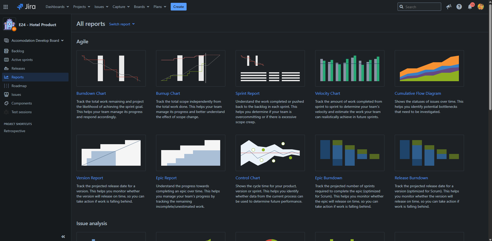
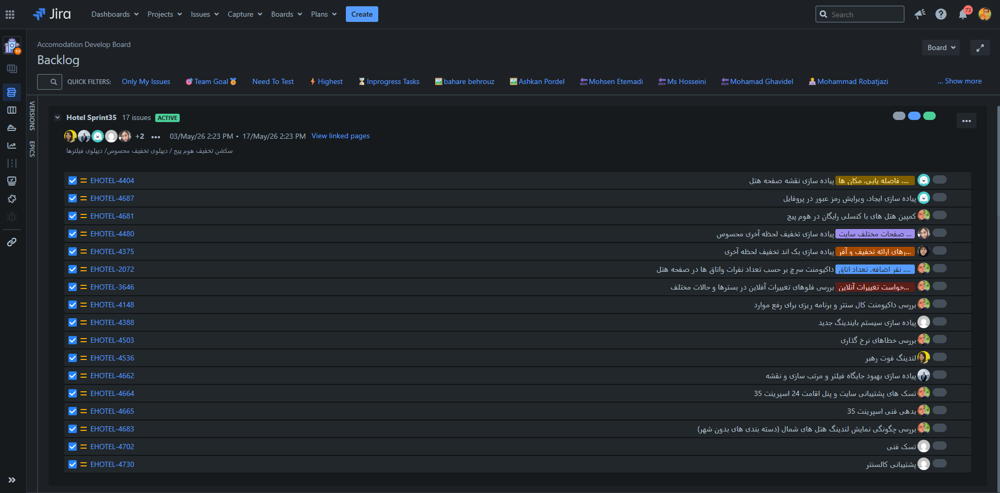

Jira یک پلتفرم مدیریت پروژه و کار تیمی است که توسط Atlassian ساخته شده
و در دنیا به استاندارد واقعی مدیریت تیمهای نرمافزاری تبدیل شده است. در Jira هر ایده،
درخواست، باگ یا کار به یک «Issue» تبدیل میشود — یک کارت دیجیتال که چرخه عمر کامل آن
از لحظه پیشنهاد تا تحویل نهایی قابل پیگیری است.
تشبیه ساده برای صاحب کسبوکار: اگر یک رستوران داشته باشید، Jira همان سیستم سفارشگیری
است که از لحظه ثبت سفارش مشتری تا تحویل غذا، هر مرحله را ثبت میکند. میدانید چه سفارشاتی
در حال آمادهسازی است، کدام پیشخدمت مسئول کدام میز است، کدام غذاها بیشتر سفارش داده میشوند
و میانگین زمان آمادهسازی چقدر است. بدون این سیستم، آشپزخانه میتواند هرجومرج باشد،
هرچند آشپزها همگی ماهر باشند.
چرا یک صاحب کسبوکار باید به Jira اهمیت بدهد؟
۰۱ · شفافیت کامل
میدانید همه روی چه کاری هستند
بهجای سؤالهای مکرر «روی چی کار میکنی؟»، یک نگاه به برد Jira نشان میدهد
هر عضو تیم چه کارهایی در دست دارد و در چه مرحلهای است.
۰۲ · مدیریت اولویتها
هیچ کاری گم نمیشود
هر ایدهای که در جلسات مطرح میشود به یک Issue تبدیل میگردد. مدیر میتواند
اولویتبندی کند و مطمئن باشد چیزی فراموش نخواهد شد.
۰۳ · تحویل قابل پیشبینی
تخمین واقعبینانه از زمان تحویل
با تحلیل سرعت تیم در Sprintهای گذشته (Velocity)، میتوان زمان تحویل فیچرهای
آینده را با دقت قابل قبولی پیشبینی کرد.
۰۴ · پاسخگویی
هر کاری یک مسئول مشخص دارد
در Jira هر Issue یک Assignee دارد. این یعنی هر کار «صاحب» مشخص دارد و
فرهنگ پاسخگویی در تیم ساخته میشود.
قابلیتهای اصلی Jira
قابلیت
ارزش برای کسبوکار
Issue Tracking
ثبت و پیگیری تسک، باگ، فیچر، استوری و حماسه (Epic)
Scrum / Kanban Boards
نمایش بصری جریان کار به سبکهای مختلف چابک
Sprint Planning
برنامهریزی دورههای ۲ هفتهای کار با اهداف مشخص
Backlog Management
نگهداری بانک ایدهها و کارهای آینده با اولویتبندی
Reports & Analytics
گزارشهای آماده برای تحلیل عملکرد و پیشبینی
Workflows
تعریف فرآیند سفارشی برای هر نوع کار (مثلاً To Do → In Progress → Review → Test → Done)
Integrations
اتصال به GitLab، Slack، Confluence و صدها ابزار دیگر
۰۲ تصویر اول: System Dashboard (داشبورد اصلی)
این اولین صفحهای است که هر کاربر هنگام ورود به Jira میبیند. ترکیبی از کارهای اختصاص
یافته به کاربر، اخبار اخیر و فعالیت تیم. بهنوعی «صبحانه خبری» هر روز کاربر است.

تصویر ۱. System Dashboard با ویجتهای Assigned to Me و Activity Stream
202Issue اختصاصیافته به کاربر
73اعلان (Notification)
10نمایش در صفحه فعلی
قابلیتهای Jira که در این صفحه دیده میشوند
Customizable Dashboard
داشبورد قابل شخصیسازی
هر کاربر میتواند ویجتهای مورد نیازش را به داشبورد اضافه کند: Assigned to Me،
Activity Stream، Sprint Health، Filter Results و...
Assigned to Me Widget
کارهای من
فهرست تمام Issueهایی که به کاربر اختصاص یافته. مرتبشده بر اساس اولویت یا تاریخ.
نقطه شروع روزانه هر کاربر.
Activity Stream
جریان فعالیت تیم
هر تغییری در پروژه (کامنت جدید، تغییر وضعیت، Issue جدید) لحظهای ثبت میشود.
تاریخچه زنده تیم.
Comment Threading
گفتوگوهای ساختاریافته
کامنتها روی هر Issue ثبت میشوند. میتوان نام افراد را @mention کرد تا اعلان
دریافت کنند.
تأثیر مستقیم بر کسبوکار
۲۰۲ Issue اختصاصیافته به یک کاربر یعنی گردنه فشار (Bottleneck) در تیم.
اگر این کاربر کلیدی بیمار شود، مرخصی برود، یا حتی فقط مرور ایمیلش طول بکشد، ۲۰۲ کار
بهنوعی متوقف میشوند. مدیر باید این بار را بازتوزیع کند تا ریسک کسبوکار کاهش یابد.
۰۳ تصویر دوم: Scrum Board (تخته اسکرام · Hotel Sprint35)
این برد، مهمترین ابزار روزانه تیم است. هر Sprint (دوره معمولاً ۲ هفتهای) با چنین بردی
اجرا میشود. کارتها از چپ به راست در ستونهای مختلف حرکت میکنند و در نهایت به ستون
Done میرسند.

تصویر ۲. برد اسکرام Hotel Sprint35 با ۵ مرحله جریان کار
5روز باقیمانده Sprint
5ستون جریان کار
7فیلتر سریع فعال
قابلیتهای Jira که در این صفحه استفاده شدهاند
Scrum Board
تخته اسکرام بصری
نمایش گرافیکی جریان کار. کارتها با drag and drop بین ستونها جابجا میشوند.
تیم در جلسه روزانه به این برد نگاه میکند.
Sprint Goal
هدف Sprint
هر Sprint یک هدف مشخص دارد. این کمک میکند تیم در پایان Sprint بداند موفق بوده
یا نه.
Sprint Timer
تایمر شمارش معکوس
نمایش روزهای باقیمانده تا پایان Sprint. ابزار روانشناختی برای حفظ تمرکز.
Custom Workflow
گردشکار سفارشی
ستون REVIEW و TEST نشان میدهد این تیم گردشکاری فراتر از حالت پایه (To Do / Doing / Done)
تعریف کرده. مناسب تیمهای با کنترل کیفیت جدی.
Quick Filters
فیلترهای سریع
با یک کلیک میتوان فیلتر کرد بر اساس فرد، اولویت، وضعیت یا برچسب. مدیر میتواند
فقط Highest Priority را ببیند.
Parent-Subtask Hierarchy
سلسلهمراتب Issue
هر کار بزرگ به زیرکارهای کوچکتر شکسته میشود. هر زیرکار قابل تخصیص به یک فرد
خاص است. مناسب کارهای چندنفره.
Avatar Assignee
آواتار مسئول روی کارت
روی هر کارت آواتار فرد مسئول نمایش داده میشود. در یک نگاه میتوان دید چه کسی
روی چه کاری است.
Complete Sprint
دکمه پایان Sprint
در پایان دوره، با یک کلیک Sprint بسته میشود. Jira بهصورت خودکار گزارش نهایی
(Sprint Report) تولید میکند.
تأثیر مستقیم بر کسبوکار
ستون DONE خالی در ۵ روز مانده به پایان Sprint یک علامت زرد است.
یا تیم بیش از ظرفیت کار برداشته، یا کارها در مرحله Test/Review گیر کردهاند.
مدیر میتواند با یک نگاه به این برد، سؤال بپرسد: «چه مانعی برای رساندن کارها
به Done وجود دارد؟» — همین گفتوگو میتواند زمان تحویل فیچرها را کوتاه کند.
۰۴ تصویر سوم: All Reports (گزارشهای جامع)
اگر بردها تصویر «همین الان» را نشان میدهند، گزارشها تصویر «روند» را میسازند.
Jira مجموعهای از گزارشهای آماده دارد که هر کدام به یک سؤال خاص مدیریتی پاسخ میدهد:
آیا به موقع تحویل میدهیم؟ سرعت تیم چقدر است؟ کجا گیر میکنیم؟

تصویر ۳. فهرست گزارشهای آماده Agile در Jira
قابلیتهای Jira که در این صفحه دیده میشوند
Built-in Reports
گزارشهای آماده Agile
۱۰+ گزارش بدون نیاز به پیکربندی. هر کدام به یک سؤال مدیریتی استاندارد در
متدولوژی Agile پاسخ میدهد.
Velocity Tracking
پیگیری سرعت تیم
عددیترین معیار توانمندی تیم. مدیر میتواند با اطمینان بگوید: «فیچر X با
۱۲۰ Story Point، حدود ۳ Sprint طول میکشد».
Bottleneck Detection
شناسایی گردنه فشار
Cumulative Flow Diagram و Control Chart گردنههای فشار را پیدا میکنند: کجای
فرآیند کار گیر میکند؟
Release Tracking
پیگیری نسخه
Version Report و Release Burndown پیشبینی میکنند نسخه بهموقع آماده میشود
یا نه. ابزار حیاتی برای مدیران محصول.
Sprint Retrospective
مرور جلسات پایان دوره
Sprint Report ابزار اصلی جلسه Retrospective است: چه چیز خوب بود، چه چیز بد،
چه چیز را در Sprint بعد تغییر دهیم.
Switch Report Menu
جابجایی بین گزارشها
دکمه «Switch report» امکان جابجایی سریع بین گزارشها بدون بازگشت به فهرست.
تأثیر مستقیم بر کسبوکار
با Velocity Chart میتوانید با اطمینان به ذینفعان (سهامداران، مشتریان بزرگ، مدیران
ارشد) بگویید: «این فیچر در ۲ ماه آینده آماده میشود». این دقت پیشبینی، اعتماد
میسازد. بدون این داده، تخمینها حدسی است و دیر یا زود اعتبار تیم را خدشهدار میکند.
۰۵ تصویر چهارم: Backlog (بانک کارهای آینده)
Backlog فهرست همه کارهایی است که تیم باید روزی انجام دهد ولی هنوز به یک Sprint
تخصیص نیافته. این مهمترین مخزن استراتژیک پروژه است: همه ایدهها، باگهای گزارششده،
درخواستهای مشتریان و قابلیتهای آینده اینجا جمع میشوند، اولویتبندی میشوند و در
Sprintهای بعد توزیع میشوند.

تصویر ۴. Backlog فعال Sprint35 با ۱۷ Issue
17Issue در Sprint35
14روز Sprint
7فیلتر سریع
قابلیتهای Jira که در این صفحه استفاده شدهاند
Active Sprint View
نمایش Sprint فعال
فهرست همه Issueهای داخل Sprint فعال با تاریخ شروع و پایان. مرجع اصلی برنامهریزی
روزانه.
Labels & Tags
برچسبگذاری موضوعی
برچسبهای رنگی کاستوم برای دستهبندی Issueها بر اساس موضوع، حوزه یا پروژههای
مرتبط.
Sprint Duration
بازه Sprint قابل تنظیم
بازه ۲ هفته (۳ مه تا ۱۷ مه) — استاندارد رایج. میتوان ۱، ۳ یا ۴ هفته هم تعریف کرد.
Sprint Status Bar
نوار وضعیت Sprint
نوار سهرنگ نشان میدهد چند Issue تمام شده، چند در حال انجام، چند مانده. خلاصه
بصری در یک نگاه.
Backlog Management
مدیریت بکلاگ
صفحه Backlog امکان جابجایی Issueها بین Sprintها با drag and drop میدهد.
ابزار اصلی Sprint Planning.
Assignee Avatars
آواتار مسئول هر Issue
آواتار سمت چپ هر ردیف، فرد مسئول را نشان میدهد. در نگاه اول میتوان فهمید بار
کاری هر فرد چقدر است.
Team Roster
فهرست اعضای Sprint
ردیف آواتارها در بالای Sprint نشان میدهد چه کسانی در این دوره مشارکت دارند.
تأثیر مستقیم بر کسبوکار
دیدن کارتهای بدون Assignee در یک Sprint فعال یعنی کارهای یتیم.
احتمالاً در روزهای پایانی Sprint کسی به آنها نخواهد رسید و به Sprint بعد منتقل
میشوند. این یعنی تأخیر در تحویل به مشتری. مدیر باید قبل از شروع Sprint مطمئن شود
هر Issue صاحب دارد.
۰۶ جمعبندی · چرا Jira برای کسبوکار شما ضروری است
Jira را میتوان به چهار ارزش کلیدی برای یک صاحب کسبوکار خلاصه کرد: